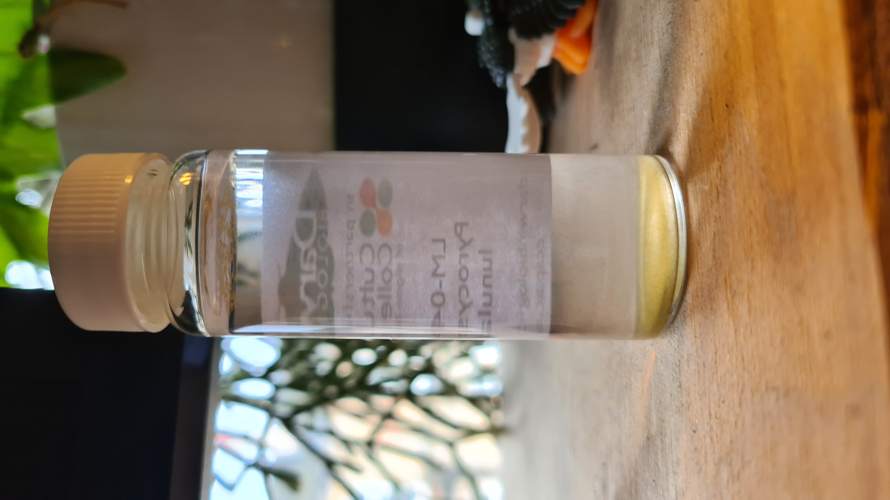

dinoflagellates is a superclass of organisms (microalgae) quite present all around the world. in my dissertation i'll explore them by talking about environmental issues, in particular about the so called harmful algal blooms (HAB). an harmful algal blooms usually occurs when the high temperatures allow for overgrowth of these organisms, mixed with a uncontrolled use of fertilizer - which get carried in the coast by rivers. the most popular HAB is said to be the Red Tide in the Gulf of Mexico, which every year causes great detriment to the marine health present along the coasts of Florida, Texas and Mexico. that's because the main organism responsible for these red tides is the Karenia Brevis, a single-celled photosynthetic organism of the genus Karenia.
K. Brevis is widely popular along the east coast of America, and when at bay it doesn't represent much of a threat, but when blooming it colours the waters red with its over-presence (hence the name Red Tides). K. Brevis releases a neurotoxin called brevetoxin, which in high concentration can be extremely harmful to the local fauna. the brevetoxin can also be harmful to humans if molluscs full of the toxin are to be ingested, leading to neurotoxic shellfish poisoning. moreover, the blooms can also be harmful to people with respiratory conditions, also leading to eye and skin irritations.
K. Brevis, alongside a multitude of species of dinoflagellates, can also produce bioluminescence, leading to spectacular displays of blue light in the waters at night. bioluminescence has a variety of functions in the animal kingdom, but in this case it's mainly viewed as a "burglar alarm", a way for the algae to alert bigger predators when an algae's predator approaches. the burglar alarm hypothesis is reinforced by the fact that the bioluminescence triggers in a peculiar way - mechanical friction, suggesting that when a K. Brevis' predator enters the bloom it will lead to a formation of a trace of itself, allowing other bigger predators to chase it down.
of course i will not work with karenia brevis for my final year's project. the main issue is with its toxicity, the second issue is about importing an organism native to the US here in Scotland. dinoflagellate is a enormously varied superclass, and luckily there are a few options - some of them are even local.
L. Polyedra and P. Lunula are quite interesting organisms for my purpose because 1) they are found globally, 2) they are not toxic in the same way as K. Brevis is, 3) their bioluminescence is triggered in the same way as the K. Brevis does and 4) they are also responsible for algal blooms alongside K. Brevis. worth mentioning that L. Polyedra is also able to produce toxins called yessotoxins, which accumulate in molluscs and can be harmful to humans if those molluscs are then ingested. both L. Polyedra and P. Lunula can be easily found in the UK, both in coasts and in labs, and although i'd love to go on an expedition to find these algae armed with a microscope and a small boat, getting them from a lab is much safer and less expensive. a couple years ago i already tried culturing L. Polyedra at home. due to negligence, my specimen died and was replaced by a common green algae. darn. the specimen costed me £30 so this time i opted for the much cheaper Pyrocystis Lunula (£17). P. Lunula also has no known toxicity of any kind. both these specimens are purchased from Culture Collection of Algae and Protozoa (CCAP), the leading labs in the UK for these kind of things - they are based in Oban.
Pyrocystis Lunula is called like that because of it's shape, resembling a half moon. it differentiates only morphologically from Pyrocystis Fusiformis, but fundamentally they are the same organism.
a cluster of Pyrocystis Lunula under the microscope.

the sample of P. Lunula I got from CCAP